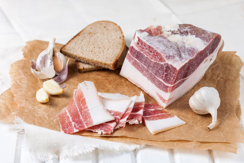

Сало

Рецепт 1 — Класичний рецепт
Перед засолюванням треба підготувати сало — порізати його на шматочки 10-15 см завдовжки і 4-6 товщиною.
Далі потрібні сухі спеції, для засолювання сала можна використовувати будь-які звичні приправи: чорний перець, червоний перець, хмелі-сунелі, часник, сухий кріп, лавровий лист, майоран, кардамон, кмин і багато інших.
Сало натирається сіллю, а зверху спеціями, досить щільно.
Посуд, в якій сало буде солитись, також обробляється спеціями.
Далі сало накривається кришкою і забирається в холодильник на 3-4 дні.
Коли підійде до кінця — зніміть пробу. Якщо сало виявилося смачним, то видаліть залишки солі і спецій ножем і папером. Якщо ж йому ще чогось не вистачає, смак недостатньо багатий, залиште дозрівати далі.
Рецепт 2 — В сольовому розчині
Цей рецепт схожий на перший, але є суттєва відмінність, в даному випадку сало солиться не сухим способом, а в розсолі.
Пласти сала пересипаються улюбленими спеціями, чорним перцем і лавровим листом обов'язково.
Літр або трохи більше води (в залежності від кількості сала і об'єму посуду, де воно буде солитись) потрібно довести до кипіння, розчинити в ній склянку солі.
Сало заливають гарячим розсолом, коли він охолоне — забирається в холодильник.
Засолювання триває 3-4 дні, після сало вважається готовим.
Сало можна дістати з розсолу або зберігати його прямо в ньому.
Рецепт 3 - Солимо сало за 1 день: експрес-метод
Буває так, що хочеться сала аж до тремтіння. Куди вже чекати в такому випадку цілий тиждень? Тут і три дні здадуться вічністю. Сало можна засолити і за один день, виходить дуже смачно.
Для цього сало відразу ріжеться на тонкі скибочки — порціонні або бутербродні.
У банку насипається сіль, чорний перець, часник, лавровий лист, запашний перець.
Кладуть шматочки сала, банку щільно закривається і інтенсивно струшується.
Треба залишити солитись сало поза холодильника, при кімнатній температурі.
Через добу сало буде готово.
На зміст